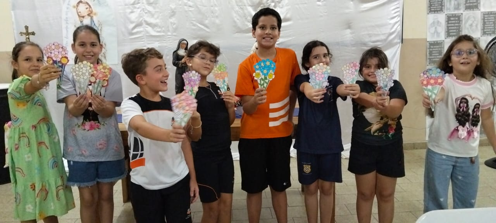
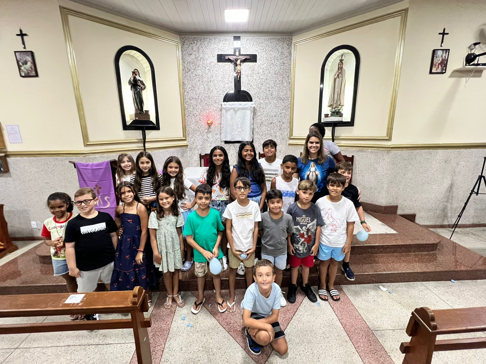

A Catequese é uma das maiores prioridades da nossa Comunidade Santa Rita de Cássia. Nossa missão é conduzir crianças, adolescentes, jovens e suas famílias a um encontro verdadeiro com Cristo, fortalecendo a fé dentro da Igreja e também dentro de casa.
Catequese: Caminhar com Jesus
6 a 8 anos
Infância Missionária
Metodologia especial em quatro partes, onde começam a descobrir que podem ser pequenos missionários no mundo.
8 anos e meio
Catequese Familiar
33 encontros com a participação dos pais. Acreditamos que os pais são os primeiros catequistas de seus filhos.


O Caminho Sacramental
1ª Etapa: O Creio
Aprofundamento da fé através da oração do Credo, compreendendo o que professamos como Igreja.
2ª Etapa: O Pai-Nosso
Dedicada à oração que Jesus nos ensinou, fortalecendo o sentido de sermos filhos de Deus.
3ª Etapa: Os Sacramentos
Preparação para a Primeira Eucaristia, o encontro vivo com Jesus na mesa da Palavra e do Pão.
Perseverança e Crisma
Após a Eucaristia, os jovens continuam crescendo na fé até a preparação para o Sacramento da Crisma. A catequese não termina em um sacramento; ela é para a vida toda.
"Catequese é caminhar com Jesus todos os dias. Catequese é para o resto da vida." ✨